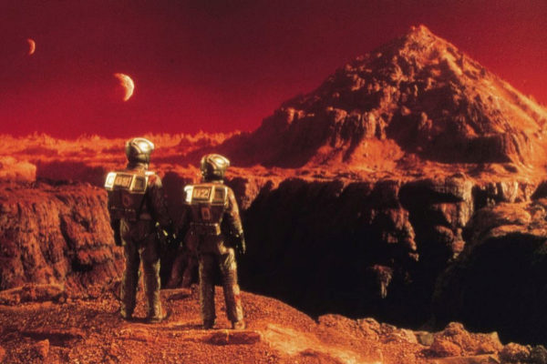

El Desafío de Marte
Marte, conocido como el "planeta rojo", ha sido durante décadas el objetivo principal de la exploración humana. Su similitud con la Tierra, a pesar de su atmósfera delgada y condiciones climáticas extremas, lo convierte en el candidato ideal para buscar señales de vida pasada y posiblemente establecer una colonia autosustentable en el futuro.
Las misiones actuales, como los rovers que recorren su superficie, están recolectando datos geológicos fundamentales para comprender cómo evolucionó el planeta. Sin embargo, la distancia y la radiación siguen siendo obstáculos técnicos significativos que los ingenieros deben resolver antes de que el primer astronauta pueda poner un pie en su suelo polvoriento.
Lista de Misiones Emblemáticas:
- Viking 1 y 2: Las primeras sondas en aterrizar con éxito en los años 70.
- Curiosity: El rover que actualmente analiza la composición química de las rocas.
- Perseverance: Diseñado para buscar biofirmas y recolectar muestras para traerlas a la Tierra.
